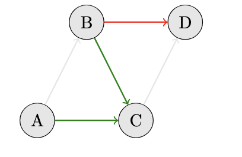

Projects

PETase Redesign
ML‑guided sequence optimization for a PET‑degrading enzyme; stability and activity improvements prioritized via in‑silico screens.

Graph Reduction for Shortest Path Variants
Problem transformation and proof sketch for a constrained shortest path variant; practical benchmarks and visualizations.

Systems and Runtimes
User‑level threading and filesystem experiments focused on correctness and performance under contention.